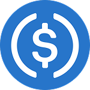
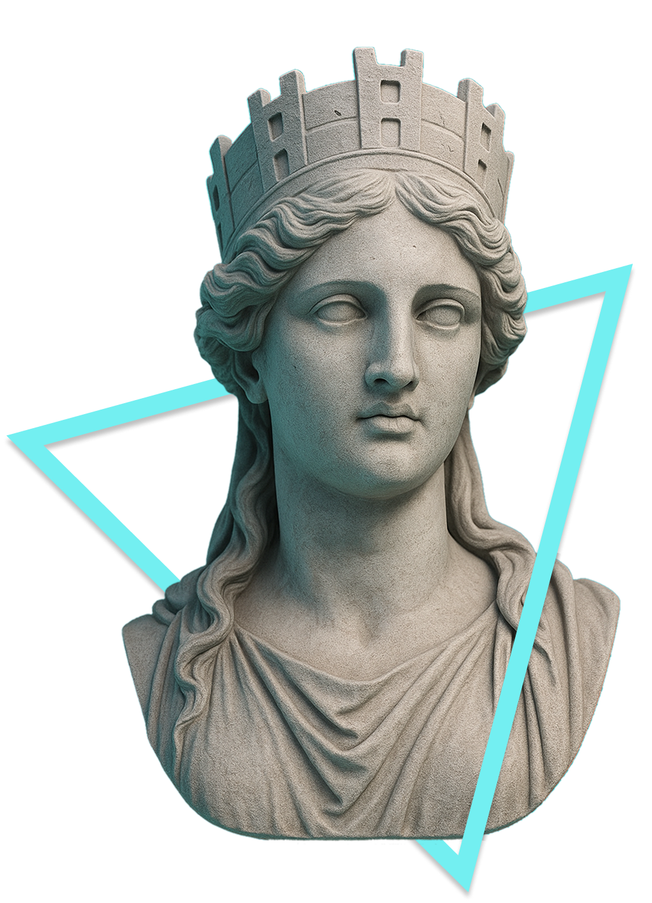

USD8
USD8 is a stable coin backed 1:1 by USDC.
It is designed to correct the mis-aligned incentive design in current Defi landscape with 2 major functions - Free Defi Insurance and White Hat Economy, you can read more about our philosophical roots
Why USD8
| USD8 |  USDC | |
|---|---|---|
| Stable property | ✓ Backed 1:1 by USDC | ✓ |
| Yield opportunities | ✓ | ✓ |
| Stablecoin itself is insured | ✓ Limited by Cover Pool | ✕ |
| Insures other selected DeFi tokens | ✓ | ✕ |
| Helps deter future DeFi hacks | ✓ Through White Hat Economy | ✕ |
How to use USD8
Low risk defi users - hold or yield with USD8 to get free defi insurance for a range of Defi tokens and positions, including USD8 itself.
High apy seekers with high risk appetite - deposit into USD8’s Cover Pools for high APY while backing the Defi insurance.
Onchain + Open-sourced
USD8 system has onchain and offchain two parts, all codes open-sourced. Onchain part follows general Defi practice with sensitive settings through a time lock. Offchain part uses a TEE with open-sourced algorithms for computation and results are verifiable by anyone.
This Doc aims to explain USD8 in simple terms. For technical details and code implementation, visit our Github repo.
Contact
You can reach us through the following channels
- USD8 telegram https://t.me/+e84i2oYk1ao1MTk1
- X @usd8_fi
- email info[at]usd8.fi
Philosophical Roots

The Broken Dream
As we embrace decentralized dream to resist the abuses of centralized power, we also give up the enforcement mechanisms that deal with wrongdoing. Without safeguards, crypto is slowly turning into a dystopia where bad actors like hackers and malicious founders are heavily incentivized and rewarded to hack and steal in broad daylight with little consequence.
This dystopia is slowly killing the decentralized industry following Gresham’s Law, where good actors are gradually driven out till only bad actors left.
Sir Thomas Gresham (1519–1579)
Failed Attempt
Early-stage Ethereum did have an attempted solution — “Code is Law”, which uses smart contracts’ immutability to prevent misconduct. Unfortunately, this hasn’t worked out, largely due to vulnerabilities in smart contracts as well as the practical needs of upgradability, which remains as an industry disagreement till today.
Now that the crypto space is flawed, we didn’t come up with a new solution but ignored the flaw because we have become numb to the hacks and rug pulls happening all the time. This is rather irresponsible. And it is even worse when we onboard the next million innocent users, exposing them to sophisticated hackers and social engineering attacks with their life savings at stake.
A Crypto-Native Alternative
We need a new solution, one without centralized power while still be able to deter malicious actors. USD8 is our attempt at this, our mission is to restore the missing layer of order enforcement in DeFi security.
Murray Rothbard (1926–1995), founder and primary theoretician of anarcho-capitalism.
USD8 is rooted in the philosophical proposal of anarcho-capitalism where a voluntary society would use insurance companies and private agencies to replace essential services provided by centralized state system. Incentives are carefully aligned in this system using capitalism and game theory to achieve a functional society without central government presents.
We adapted this model and made it crypto native, to provide the last missing piece for Defi and the whole crypto system. USD8 will be serving two major purposes - as insurance to cover users’ losses and as an order-enforcing mechanism to recover hacked assets.
The Insurance
USD8 offers free insurance to DeFi users according to their insurance score based on USD8 usage history, covering a range of DeFi tokens vetted by our team and third party security partners. The more you use USD8, the more you are covered. If any insured Defi token drops significantly(currently 20%), users can claim up to 80% value back.
E.g., if Aave USDC market is hacked and 1 aUSDC drops to 0.3 USDC, users can claim up to 0.8 USDC in value with their aUSDC.
The actual payout depends the user’s USD8 history vs other claimers, and the Cover Pool size.
Payouts come from USD8’s Cover Pools which are public vaults with different asset types, incentivized by USD8’s treasury revenue. Any LPs depositing into Cover Pools will get stable coin yield in USD8, however assets in the Cover Pool might be deployed to cover any potential losses.
This insurance system is exciting because:
- It is a first-in-the-industry coverage, free for all USD8 users, past and present.
- It offers a new stream of yield in stable coins for assets that traditionally lack yield sources, like wBTC, or even alts like AAVE, LINK, UNI… unlocking capital efficiency.
Order Enforcement
Since USD8 sits on a pile of hacked LP tokens after users claim, this puts USD8 in a unique position with significant financial incentives to recover these funds. USD8 will be cultivating a White Hat Economy as opposed to the current crypto system rewarding black hats. This white hat economy will involve the public in tracing and recovering the lost funds — read more on the White Hat Economy page.
This system could cultivate a positive culture with significant incentives for good actors and extra burden to deter malicious ones, leading to a perception reality to further reduce malicious acts for the industry as a whole - If hackers know they will be forever chased by the public and professionals for their wrongdoing, their decision to hack and steal might change at the moment of committing the crime.
DeFi Insurance
- USD8 & sUSD8 holders get insurance score every block
- insurance score can be used to file claims for a range of insured Defi tokens, including USD8 and sUSD8
- the more score, the more payout. Up to 80% value, capped by Cover Pool limit
- score is non transferrable and never expire
- payout funds come from the Cover Pools
E.g. assume Aave aUSDC is an insured token with 80% max coverage
- aUSDC to USDC drops from 1 to 0.3
- user with insurance score get up to 0.8 USDC in value from the Cover Pool asset, in exchange for their aUSDC
Claim Process
Claim is a 3-step process combine both onchain and offchain(TEE) process, it takes around 9-12 days during beta and 6-9 days after beta. It is important to not miss any deadlines.
1 File a Claim
Anyone can file a claim if
- an insured token’s adjacent 24hr TWAP prices dropped >=20% in the past 1-6 days.
- claimer has insurance score available to spend (min 7 days old)
- claimer held the insured token for min 7 days before the price drop
There is also a 10 USD8 bond, fully refunded if condition 2 and 3 are satisfied. First claimer needs to provide a rough time when the price drop happened, our TEE will ping down the exact block.
Important - claim window closes 3 days after the first valid claim, after that no claims can be filed for this insured token.
2 Settle Claims
Anyone can settle a claim by submitting an attestation from the TEE which uses open-sourced algorithm to compute every claimers insurance score and payout. Results are fully verifiable.
Individual payout amount is calculated based on
- claimer’s insurance score vs total score from all claimers
- Cover Pool limit
- max coverage of the insured token
E.g. 2 claimers, A has 100 score and B has 200 score, and they both escrowed $500 worth of insured tokens with a max coverage of 80%. Current Cover Pool has $2250 worth of assets.
- the Cover Pool limit is current set to 50%, so total $1125 can be used. 80% of which is the budget to cover claims which is $900. A has half score as B, A can claim up to $300 and B $600
- Both A and B escrowed $500 worth of insured tokens, at max coverage of 80%, their claims are capped at $400 for their loss.
- A will get $300 payout, B gets $400
Settlement window opens for max 3 days, as soon as its settled user can finalize their payouts. If not settled, claimers can withdraw their escrowed tokens, no insurance scores will be spent.
During beta - admin has an extra 3 days after settlement to verify and dispute with a TEE signed new settlement. This is a safety measure to ensure no malicious settlement bugs exist.
3 Finalize Payouts
During this process claimers has 3 days to accept the payout, if they choose to accept, they will
- forfeits their escrowed insured token and insurance score
- receives Cover Pool asset(s) with total USD value matching the entitled payout
If claimers choose to not accept the payout, they can withdraw escrowed tokens and keep their insurance score.
No matter claimers choose to finalize or not, bond will be returned as long as bond conditions are met.
Important - payout window is 3 days, after that all pending claims are considered not accepted, claimers can withdraw their escrowed tokens.
TEE
USD8 uses an amazon secure enclave running open sourced algorithm offchain to compute and sign payouts. Anyone can trigger the TEE and submit the result onchain which will verify the TEE’s signature before accepting the final result. Since the algorithm is open sourced, the result is publically verifiable by anyone.
We plan to shift to a zk-coprocessor network like Brevis in the future to pass the walkaway test.
Boosters
Boosters are NFTs that can be burnt when filing a claim to add a 1% boost to your total insurance score. You can stack multiple Boosters. Boosters are not for sale, they are only minted to early stage users who help USD8 grow. Follow our X and Telegram.
Enter an Ethereum address to check Boosters
Cover Pools
Cover Pools are public vaults anyone can deposit and withdraw at any time. Cover Pools
- accepts a specific token as deposit e.g. wstEth
- pays an APY in USD8 funded by USD8’s treasury yield
- has capped size
Insured Tokens
Insured tokens are carefully evaluated, selected and adjusted on an ongoing basis. USD8 accepts independent security audits or certificates from the following sources.
Withdraw
Withdraw has a 7 day cool down window, can be requested at anytime when there are no active claims.
If new claims are made during this time, withdraw process is then paused till the incident is resolved which can be another 9-12 days during beta (6-9 days after beta) from the first claim. During this time all assets in cool down are still exposed to the insurance claim payouts.
Assets in cool down do not gain yield and are still covering claims. Assets are withdrawable after cool down at anytime, they do not cover any claims nor gain yield anymore.
Payout Limit
There is a limit for the total payout for each incident from the Cover Pool, currently set at 50%, meaning max payout of each incident is capped at 50% size of the current Cover Pool.
White Hat Economy
The White Hat economy is the enforcement layer of USD8. It plays a critical role in recovering lost assets and deterring future malicious activities in Defi.
After a successful claim, the forfeited LP tokens become the property of the USD8 protocol, providing the financial engine to power the White Hat Economy. We plan to explore multiple mechanisms depending on the size of the hack:
- Tokenized Distressed Debt Market
- Bounties & Anonymous Tips
- White Hat Guild & Open Education
- Legal Action & Law Enforcement
Why This Matters
Insurance alone is reactive. The Cover Pool makes users whole after a hack, but it does not change the incentives that produced the hack in the first place.
The White Hat Economy is the second half of USD8’s thesis — turning the proceeds of every claim into pressure on the attacker, and turning every member of the public into a potential adversary for bad actors.
This is how USD8 addresses the deeper problem laid out in our Philosophical Roots — the missing alignment and enforcement layer that let malicious activity flourish in crypto. By rewarding good actors and imposing permanent, compounding risk on bad ones, the White Hat Economy realigns the industry’s incentives and, over time, deters the next hack from being committed in the first place.
Launch Time
We aim to launch the White Hat Economy once USD8 holds meaningful amount of forfeited insured tokens.
FAQs
So I get free insurance from USD8 & sUSD8?
Yes, that’s the benefit of USD8 comparing to other stable coins. You get Insurance Score every block, the more and longer you hold USD8/sUSD8, the more score you get.
The rate of accumulating score differs, currently 1 USD8 gets you 1 score per day, while 1 sUSD8 gets you 0.1 score per day.
Is there a min holding requirement before claim?
Yes. Insurance score needs to be 7 days old when making a claim. You also need to hold the insured token for min 7 days before price drops.
I had USD8 before but not now, am I still insured?
Yes. You should have some insurance score accumulated, it does not expire. You can file claims as long as your score is 7 days old.
How much payout do I get?
Depends on 1.your insurance score vs others’ claiming at the same time 2.cover pool size limit.
The more Insurance Score, the higher your claim weights. Max payout amount is 80%, you might get less than that if you have a low score - however you can always choose to not accept the final payout if it is too low and keep your Insurance Score for future use.
What’s needed when filing a claim?
- the insured token you are claim against
- insurance score
- 10 USD8 bond, refunded after claim
- boosters (optional)
How do you reduce the Cover Pool LP risk?
Cover Pool assets might be deployed to cover claims, which makes it riskier that’s why it comes with a higher APY. To reduce Cover Pool risk, our team
- independently vets every protocol before offering insurance
- review third party audits for each protocol
- adjust/revoke coverage for each protocol based on ongoing monitoring
Claims are not expected to occur often, but there is always a possibility.
What’s different in beta?
Beta has a few safety training wheels which we plan to remove afterwards, during beta admin/Timelock has special rights and privileges.
- Admin or Timelock can dispute an incident payout settlement by submitting a new settlement root. This also adds a 3 day dispute window to the claim process, which will be removed after beta.
- Timelock can upgrade Registry, USD8, Treasury, and DefiInsurance, we plan to remove upgradability after beta.
Does USD8 has a governance token?
Not at the moment.
Show all the risk involved in USD8?
Sure, see Transparency
How does USD8 make money?
USD8 has several revenue models,
- partial USD8 treasury yield
- 20% from payout left over - because claimers only get max 80% coverage, the left over 20% is USD8’s fees.
- partial loss recovered through White Hat Economy
How can I contribute to USD8?
We welcome community contributions across mechanism design, partnerships, marketing, and more. The best place to post proposals, critiques, and ideas is our GitHub Discussions. Contributors can earn Boosters.
Who is behind USD8?
USD8 is built by @codephobic - a Security Researcher at OpenZeppelin.
Transparency
Here are the trust assumptions and risks involved in USD8 protocol. Most of these are commonly found in Defi protocols, we choose to declare these up-front to our users.
Admin & Timelock
Admin privileges was reduced as much as possible during the design, most critical actions are performed through the timelock, which allows extra time for users to react to any upcoming changes.
Admin is allowed to perform system settings like
- Deploy USD8 treasury to pre-approved strategies, but can’t directly add strategies
- Manage pausing, revenue weights, protocol fee, cover pool deposit caps
Timelock manages sensitive system settings
- Add/remove admins or replace the timelock
- Configure pools, insured tokens, scoring, oracles, incident/exit timing, claim bonds and TEE signers
- Manage Treasury strategies and revenue distribution.
- Permanently call endBetaMode, disabling upgrades and beta settlement corrections
During Beta
Beta has a few extra safety training wheels which gives admin and timelock extra privileges.
-
Admin or Timelock can correct settlement root, which also adds a 3 day dispute window to the claim process
-
Timelock can upgrade Registry, USD8, Treasury, and DefiInsurance
Both will be removed once beta ends.
Defi Insurance
Defi Insurance is free for all USD8/sUSD8 users, however the payout amount can vary based on claimers’ insurance scores and Cover Pool size limit.
We designed a process to allow users the freedom to accept or reject the payout in case it’s not up to expectation.
Cover Pool
Cover pools are more risky because they are used to cover claims. Our team carefully vets each individual token we insure to reduce the risk as much as possible, see How do you reduce the Cover Pool LP risk?.
Cover Pool LPs should be aware of the risk.
TEEs
USD8 system uses offchain TEEs to compute coverage, this means the current system relies on servers we operate. However we are planning to move to a trustless setup using zk-coprocessor networks in the future.
External Services
USD8 relies on a few external services to function, such as
- Chainlink Oracles
- RPC providers
- Server/TEE providers (however we are planning to move to a trustless zk-coprocessor network in the future)
- Defi yield sources like Aave, Morpho etc
Any issues with these services might also impact USD8.
Legal - Terms, Privacy and Risk Disclaimer
Last updated: August 22, 2026
Please read this page carefully before accessing usd8.fi, its documentation, interfaces, APIs, or any smart contracts, tokens, vaults, pools, claim mechanisms, settlement services, or other software associated with USD8.
Terms
1. Acceptance of these terms
These terms govern your access to and use of:
- usd8.fi and its documentation;
- any USD8 web application or wallet interface;
- the USD8 Protocol smart contracts, including USD8, Treasury, sUSD8, Cover Pools, DeFi Insurance, Registry, and related adapters and strategies;
- insurance-score, pricing, settlement, TEE, RPC, and other hosted services made available in connection with USD8; and
- any other content, software, feature, or service that links to these terms.
Together, these are the Services. References to USD8, we, us, or our mean the person or entity operating the relevant website, interface, or hosted service, as applicable. Autonomous smart contracts and third-party services may operate independently from us.
By visiting, accessing, connecting a wallet to, or using any part of the Services, or by initiating any transaction through the Services, you confirm that you have read, understood, and agreed to these terms, the Privacy section, and the Risk Disclaimer. If you act for an organization, you confirm that you have authority to bind that organization. If you do not agree, do not access or use the Services.
We may update this page at any time. Changes become effective when posted with a revised “Last updated” date. Your continued use after an update constitutes acceptance of the updated terms.
2. Eligibility and compliance with law
You may use the Services only if:
- you are at least 18 years old and have legal capacity to enter into these terms;
- your access and activities are lawful in every jurisdiction applicable to you;
- you are not subject to sanctions or included on a restricted-person list maintained by the United Nations, United States, European Union, United Kingdom, or another applicable authority;
- you are not located, ordinarily resident, incorporated, or acting for a person in a jurisdiction where your use would be unlawful; and
- you are not using the Services to evade legal, regulatory, geographic, sanctions, or other restrictions.
Laws governing digital assets, stablecoins, lending, yield products, insurance-like arrangements, derivatives, securities, commodities, money transmission, sanctions, taxation, and consumer protection vary between jurisdictions and may change without notice. You are solely responsible for determining whether and how you may lawfully access and use the Services. If applicable law prohibits or restricts your use, you must not use the Services.
We may restrict, suspend, or terminate access to any hosted Service at any time, including based on location, legal requirements, sanctions risk, security concerns, misuse, or operational necessity. Such restrictions may not prevent direct interaction with independently deployed smart contracts.
3. Nature of USD8 and the Services
USD8 is a decentralized-finance protocol designed for mainnet use.
The protocol is designed around the following components:
- USD8: a token minted by depositing USDC through Treasury. In a healthy state, USD8 is intended to redeem for up to one USDC per USD8. If protocol reserves are insufficient, redemption may be pro rata and below one USDC per USD8.
- Treasury: holds idle USDC and may allocate reserves to strategies approved by the timelock. Strategy assets and idle USDC are counted toward reserves. Strategy returns may fund protocol revenue, sUSD8, Cover Pool rewards, or other configured receivers.
- sUSD8: an optional Morpho Vault V2 savings share token. Users deposit USD8 and receive vault shares. Under the current design, USD8 remains idle in the savings adapter, and returns depend on Treasury-funded revenue released subject to the vault’s configured rate limit. Returns are variable and are not guaranteed.
- Insurance Score: a non-transferable accounting value derived from eligible USD8 and sUSD8 holdings. Score is computed from public blockchain history using off-chain services and may be subject to maturity, rate, availability, and spending rules.
- DeFi Insurance mechanism: an on-chain, rules-based mechanism through which eligible users may submit claims involving configured insured tokens. Claims depend on configured conditions, score, historical holdings, pricing data, deadlines, settlement, available Cover Pool capital, and claimant acceptance.
- Cover Pools: separate ERC-4626 vaults whose depositors retain exposure to a designated asset, may receive variable USD8 rewards, and intentionally place principal at risk to fund eligible claim payouts.
The current mechanics, parameters, supported assets, roles, contract addresses, and deployment status may change. The smart-contract code and on-chain state control in the event of any conflict with explanatory content on the website or in the documentation.
4. Non-custodial operation and blockchain transactions
The interface is designed to be non-custodial. We do not request or possess your private keys or seed phrase and cannot initiate transactions from your wallet without your authorization. Wallet software, RPC providers, blockchain networks, smart contracts, and other infrastructure are provided or operated by third parties or decentralized networks.
You are solely responsible for:
- securing your wallet, device, private keys, seed phrase, authentication methods, and backups;
- verifying the network, contract address, token, recipient, calldata, approvals, permissions, amounts, slippage, fees, and transaction details before signing;
- maintaining enough native tokens to pay network fees;
- revoking approvals you no longer want;
- protecting yourself from phishing, impersonation, malicious approvals, compromised frontends, and address poisoning; and
- all transactions submitted by your wallet, whether authorized by you or by someone who gained access to it.
Blockchain transactions may be irreversible. We generally cannot cancel, reverse, recover, or refund a transaction or restore lost credentials or assets.
5. No financial, legal, tax, insurance, or other advice
The Services are provided for informational and technical purposes. Nothing in the Services constitutes financial, investment, legal, tax, accounting, insurance, cybersecurity, or other professional advice; a recommendation; an offer or solicitation to buy or sell an asset; or a promise of any outcome.
Descriptions of yield, annual percentage yield, coverage, value, collateral, reserves, risk, historical performance, audits, or protocol behavior are estimates or explanations only. They are not guarantees. You must conduct your own investigation and consult appropriately qualified advisers before acting.
No communication, documentation, interface display, contribution, administrative action, or support response creates a fiduciary, advisory, brokerage, agency, partnership, trust, insurer-policyholder, or other special relationship between you and us.
6. The DeFi Insurance mechanism is not traditional insurance
The terms insurance, insured, coverage, and claim describe protocol mechanics. They do not mean that USD8, a contributor, a Cover Pool, or an interface operator is a licensed insurer, insurance intermediary, guarantor, surety, or underwriter. Using or holding USD8 or sUSD8 does not create an insurance policy or a contract requiring anyone to indemnify you.
The DeFi Insurance mechanism is an experimental on-chain primitive. Although aspects of its operation or economic outcome may resemble traditional insurance, it is inherently different: it is governed by smart-contract rules, configured parameters, limited Cover Pool capital, off-chain computation, and user actions rather than a conventional insurance policy, regulated insurer, underwriting process, or guaranteed contractual indemnity.
The protocol does not guarantee that:
- any token, protocol, position, incident, exploit, depeg, loss, or event will be covered;
- an incident will satisfy the configured price-drop, timing, holding, score, oracle, or settlement conditions;
- a claim will be valid, settled, finalized, accepted, or paid;
- settlement data, TEE output, signatures, Merkle proofs, price feeds, or historical blockchain data will be available or correct;
- you will meet every filing, cancellation, proof, settlement, or acceptance deadline;
- your Insurance Score will be available, sufficient, correctly displayed, or worth any particular amount;
- Cover Pools will contain enough assets or that configured payout limits will remain unchanged; or
- a payout will equal your loss, the value of escrowed assets, a displayed estimate, a maximum coverage percentage, or any other amount.
Claimant allocations may be reduced by score allocation, pool-level limits, token-level limits, insufficient pool capital, valuation methods, rounding, or other configured rules. The incident’s gross Cover Pool budget includes a protocol share; once a claimant’s Merkle-proven net payout is fixed, the current contract pays that amount to the claimant and debits the protocol share separately from Cover Pool capital. Coverage generally concerns loss in an insured token relative to its configured immediate underlying; loss in that underlying may not itself qualify. Eligible claimants who accept a payout surrender the eligible portion of escrowed insured tokens, spend Insurance Score, and consume Boosters; excess escrow is returned under the current design. Claimants who do not complete required actions before deadlines may lose the ability to receive a payout.
You must not rely on USD8 as a substitute for regulated insurance, diversification, due diligence, risk management, or maintaining sufficient assets to absorb a total loss.
7. Prohibited conduct
You must not use the Services to:
- violate any law, regulation, court order, sanctions program, or third-party right;
- launder money, finance terrorism, evade taxes or sanctions, or conceal proceeds of unlawful activity;
- defraud, deceive, manipulate, harass, threaten, or harm another person;
- submit a knowingly false, misleading, duplicated, manipulated, or abusive claim;
- manipulate prices, oracles, markets, governance, settlement inputs, blockchain history, or protocol accounting;
- exploit, attack, disrupt, overload, introduce malware into, or obtain unauthorized access to any website, API, server, TEE, wallet, smart contract, or third-party service;
- bypass access controls, rate limits, geographic restrictions, or security measures;
- infringe intellectual-property, privacy, publicity, or other rights; or
- use the Services in any manner that exposes us, contributors, service providers, or other users to legal or security risk.
Good-faith security research is permitted only when expressly authorized by, and conducted in accordance with, USD8’s published security or bug-bounty policy. Do not exploit or retain user assets outside an expressly authorized security process.
8. Third-party services and content
The Services depend on or link to third parties, potentially including wallet providers, Ethereum and other blockchain networks, RPC and API providers, block explorers, USDC and its issuer, Morpho, ERC-4626 strategies, Chainlink and other oracle providers, Amazon Web Services and enclave infrastructure, GitHub, Google Analytics, bridges, decentralized exchanges, and other protocols.
We do not control and are not responsible for third-party code, assets, services, terms, privacy practices, uptime, solvency, security, accuracy, or conduct. A link, integration, token listing, strategy approval, audit reference, or mention is not an endorsement or warranty. Your use of a third party is governed by its own terms and is at your own risk.
9. Intellectual property and software licenses
Names, logos, visual assets, site content, and other materials may be protected by intellectual-property laws. Copyright © 2026 USD8. All rights reserved. Except where a separate license applies, you may use the Services only for lawful personal or internal purposes and may not misrepresent affiliation with or endorsement by USD8. The names USD8, sUSD8, and USD8 cover-token naming conventions (including tokens designated USD8-cp-…), together with associated logos, are marks of the operator and may not be used to identify any incompatible fork, copy, or unrelated service without prior written consent.
Source code is governed by the license contained in its repository. The USD8 Core repository currently uses the Business Source License 1.1, with the stated Change Date and Change License identified there. Source availability does not grant rights beyond the applicable license and does not constitute a warranty.
10. Taxes
You are solely responsible for determining, reporting, withholding, collecting, and paying all taxes, duties, levies, and other governmental charges arising from your access, holdings, transfers, rewards, yield, claims, payouts, disposals, or other activities. We do not provide tax advice or undertake tax reporting for you except where legally required.
11. Suspension, changes, and termination
Hosted Services may be changed, paused, restricted, discontinued, or unavailable at any time without notice. Protocol parameters, supported assets, strategies, scoring rates, coverage caps, pool limits, fees, roles, signers, oracles, and other settings may change through authorized administration or timelock processes.
During beta, specified contracts may be upgradeable, and authorized roles may correct or void settlement roots as described in Transparency. Ending beta removes specified upgrade and correction powers but does not remove every administrative or timelock power.
Terminating or restricting the hosted interface may not terminate independently deployed smart contracts. You are responsible for understanding whether and how you can interact directly with them.
12. Disclaimers of warranties
TO THE MAXIMUM EXTENT PERMITTED BY LAW, THE SERVICES ARE PROVIDED “AS IS,” “AS AVAILABLE,” AND “WITH ALL FAULTS.” WE DISCLAIM ALL EXPRESS, IMPLIED, AND STATUTORY WARRANTIES, INCLUDING WARRANTIES OF MERCHANTABILITY, FITNESS FOR A PARTICULAR PURPOSE, TITLE, NON-INFRINGEMENT, ACCURACY, SECURITY, AVAILABILITY, QUIET ENJOYMENT, AND THAT THE SERVICES WILL BE UNINTERRUPTED OR ERROR-FREE.
WE DO NOT WARRANT THAT CODE HAS BEEN FULLY AUDITED; THAT ANY AUDIT, TEST, REVIEW, FORMAL-VERIFICATION RESULT, MONITORING PROCESS, OR SECURITY MEASURE IS COMPLETE; THAT DEFECTS WILL BE CORRECTED; OR THAT ANY ASSET, RESERVE, STRATEGY, VAULT, POOL, OR THIRD PARTY WILL REMAIN SOLVENT, LIQUID, AVAILABLE, OR AT ANY PARTICULAR VALUE.
Some jurisdictions do not allow certain warranty exclusions, so some exclusions may not apply to you.
13. Limitation of liability
TO THE MAXIMUM EXTENT PERMITTED BY LAW, USD8 CONTRIBUTORS, WEBSITE OR INTERFACE OPERATORS, DEVELOPERS, ADMINISTRATORS, SIGNERS, SERVICE PROVIDERS, AFFILIATES, OFFICERS, EMPLOYEES, CONTRACTORS, AND AGENTS WILL NOT BE LIABLE FOR ANY INDIRECT, INCIDENTAL, SPECIAL, CONSEQUENTIAL, EXEMPLARY, OR PUNITIVE DAMAGES; LOSS OF ASSETS, TOKENS, PRIVATE KEYS, DATA, REVENUE, PROFITS, BUSINESS, OPPORTUNITY, GOODWILL, OR EXPECTED SAVINGS; OR DAMAGES ARISING FROM SMART CONTRACTS, CLAIMS, COVER POOLS, STRATEGIES, ORACLES, TEES, GOVERNANCE, NETWORKS, THIRD PARTIES, SECURITY INCIDENTS, REGULATORY ACTION, OR YOUR INABILITY TO USE THE SERVICES.
TO THE MAXIMUM EXTENT PERMITTED BY LAW, THE AGGREGATE LIABILITY OF ALL SUCH PARTIES FOR ALL CLAIMS RELATING TO THE SERVICES WILL NOT EXCEED THE GREATER OF (A) USD 100 OR (B) THE AMOUNT YOU PAID DIRECTLY TO THE RELEVANT WEBSITE OR INTERFACE OPERATOR FOR THE SERVICES DURING THE TWELVE MONTHS BEFORE THE EVENT GIVING RISE TO LIABILITY.
These limitations apply regardless of the legal theory and even if a party was advised that damages were possible. They do not exclude liability that cannot lawfully be excluded.
14. Indemnification
To the maximum extent permitted by law, you agree to defend, indemnify, and hold harmless the parties listed in Section 13 from claims, liabilities, damages, judgments, losses, costs, and reasonable legal fees arising from your use or misuse of the Services, violation of these terms or applicable law, infringement of another person’s rights, or transactions initiated through your wallet. We may control the defense of an indemnified matter, and you agree to cooperate with that defense.
15. Governing law and disputes
These terms, the Privacy section, the Risk Disclaimer, and any dispute arising out of or relating to them or the Services are governed by the laws of the Federal Republic of Germany, excluding its conflict-of-laws rules and excluding the United Nations Convention on Contracts for the International Sale of Goods. Mandatory consumer-protection rights in your country of habitual residence remain unaffected to the extent they cannot be waived.
Before starting a formal proceeding concerning the Services, you agree to send a written description of the dispute and requested relief to info@usd8.fi and allow 30 days for an informal resolution attempt, except where urgent injunctive relief is reasonably necessary.
TO THE MAXIMUM EXTENT PERMITTED BY APPLICABLE LAW, EACH PARTY MAY BRING CLAIMS ONLY IN ITS INDIVIDUAL CAPACITY AND NOT AS A PLAINTIFF OR CLASS MEMBER IN A CLASS, COLLECTIVE, CONSOLIDATED, OR REPRESENTATIVE ACTION.
To the maximum extent permitted by law, any claim concerning the Services must be filed within one year after the event giving rise to the claim; otherwise, the claim is permanently barred. Nothing in this section limits a non-waivable limitation period or procedural right.
Subject to the foregoing and to the extent permitted by applicable law, the courts of Frankfurt am Main, Germany have exclusive jurisdiction over any dispute arising out of or relating to the Services or these terms. Either party may nonetheless seek interim or injunctive relief in any court of competent jurisdiction.
16. General terms
These terms and any incorporated notices are the entire agreement concerning the Services. If a provision is held invalid or unenforceable, it will be enforced to the maximum lawful extent and the remaining provisions will continue. Failure to enforce a provision is not a waiver. You may not assign your rights or obligations without prior written consent; we may assign rights and obligations in connection with a reorganization, transfer, or operation of the Services. Sections intended by their nature to survive termination will survive.
Nothing in these terms limits non-waivable rights available under applicable law. Questions about these terms may be sent to info@usd8.fi.
Feedback. If you send us ideas, suggestions, or feedback about the Services, you grant us a perpetual, irrevocable, worldwide, non-exclusive, royalty-free license to use them freely for any purpose without attribution or obligation. Do not submit feedback you consider confidential or proprietary.
Electronic communications. You consent to receive communications from us electronically, including notices posted on the Services or sent to contact points you have provided. These communications satisfy any legal requirement that they be in writing.
Export controls. You must not access, export, re-export, or transfer the Services or related technical data in violation of German, European Union, or applicable United States export-control and sanctions laws.
Privacy
1. Scope and controller
This Privacy section explains the limited information USD8 currently collects when you visit its website, documentation, or interface. USD8 currently collects usage information only through Google Analytics. Public blockchains and independent third parties may process information under their own rules and privacy notices; their processing is not collection by USD8.
The controller responsible for the processing described in this section is the operator of the relevant website or interface identified in these terms (see Terms §1). Privacy requests may be sent to info@usd8.fi.
2. Information we may process
USD8 currently processes only website analytics data through Google Analytics. Depending on Google’s operation and configuration, this may include IP address, approximate location derived from IP, browser and device type, operating system, language, referring page, pages viewed, access times, interactions, cookies, and similar identifiers.
USD8 does not currently maintain user accounts or intentionally collect or retain names, email addresses, wallet private keys, seed phrases, wallet balances, transaction histories, claim histories, or other protocol activity as user-profile data. Never send us a private key or seed phrase.
The interface may request public blockchain information or send a public wallet address or chain identifier to an RPC, wallet, blockchain, or other service needed to display protocol information. USD8 does not currently retain that information as a user profile. Those independent services may process it under their own privacy notices.
3. How information may be used
Google Analytics information is used to understand website and documentation usage, measure performance, identify errors, and improve the Services. Where applicable, this processing may be based on consent or legitimate interests in understanding and improving the Services. USD8 does not sell personal information for money.
4. Cookies, browser storage, analytics, and choices
Google Analytics loads by default when application or documentation pages open. Loading begins without a prior choice in the current interface and may transmit the visitor’s IP address, browser or device information, page URL, referrer, timestamps, interactions, and identifiers to Google. Google may place or read cookies or similar identifiers and process this data under its own Privacy Policy, including on servers outside your country.
The Services currently use the following cookies and similar technologies:
| Type | Provider | Purpose | How to control |
|---|---|---|---|
| Analytics (first- and third-party) | Google (Google Analytics) | Understand website and documentation usage, measure performance, identify errors | Browser settings; Google’s Analytics opt-out tools |
| Essential browser storage (first-party, local storage / session storage) | USD8 interface | Store interface preferences and wallet-connection session state needed for the application to function | Clearing site data in your browser settings |
Essential browser storage does not require consent. Analytics technologies are not strictly necessary: depending on where you are located, you may be entitled to consent before they load or be notified of your ability to object. You can limit cookies through your browser settings, use browser privacy controls, block images, or use Google’s opt-out tools. Blocking cookies or browser storage may affect functionality. Wallet providers and other third parties may provide separate privacy settings.
Where required by applicable law, we will provide a consent mechanism or equivalent choice before loading non-essential tracking technologies.
5. How information may be shared
Analytics information is shared with Google as the analytics provider and may be disclosed when legally required. USD8 does not currently share a separate user-profile database because it does not maintain one.
Public blockchain information is independently public and can be viewed, copied, analyzed, and shared by anyone. We cannot control downstream use of public blockchain data.
6. Third-party processing
Google processes analytics information under its own privacy notice. Hosting providers, wallet providers, RPC providers, blockchain networks, block explorers, and linked sites or protocols may also independently process information when you use their services. Their processing is governed by their own privacy notices and is not controlled by USD8.
7. International transfers and retention
Google may process analytics information in countries other than where you live, which may provide different levels of data protection. Analytics information is retained according to the applicable Google Analytics settings and Google’s policies. USD8 does not currently maintain a separate database of visitor personal information. Public blockchain records are generally permanent and cannot be altered or deleted by us.
8. Security
We may use reasonable safeguards, but no website, analytics service, or transmission method is completely secure. We cannot guarantee that analytics information will never be lost, accessed, altered, disclosed, or destroyed without authorization.
9. Your choices and rights
Depending on your location, you may have rights concerning analytics information, including access, deletion, restriction, objection, or withdrawal of consent where processing relies on consent. Because USD8 does not maintain user accounts or a separate visitor database, we may have limited ability to identify analytics information as belonging to a particular person.
If you are located in the European Economic Area, the United Kingdom, or Switzerland, you have the rights described in the GDPR or UK GDPR, including access, rectification, erasure, restriction of processing, data portability, and objection. The lawful basis for analytics processing is your consent where required; otherwise our legitimate interests in understanding and improving the Services.
If you are a resident of a U.S. state with a comprehensive consumer-privacy law (including California, Colorado, Connecticut, Texas, Virginia, and others), note that USD8 does not sell personal information for money and does not share personal information for cross-context behavioral advertising as those terms are defined by such statutes, and therefore the related opt-out rights do not apply to the current Services. Rights of access, deletion, correction, and portability remain available to the extent the law applies and we can identify data relating to you.
Requests may be sent to info@usd8.fi. You may also use Google’s analytics controls or complain to the data-protection authority applicable to you. We will never ask for a private key, seed phrase, or wallet transaction to process a privacy request.
10. Children and changes
The Services are not intended for anyone under 18, and we do not knowingly collect personal information from children. If you believe a child provided information, contact us.
We may update this Privacy section as the Services, providers, or laws change. The revised version becomes effective when posted with an updated date.
Risk Disclaimer
Using USD8 involves substantial risk and can result in partial or total loss. The following list is not exhaustive. You should use only assets you can afford to lose completely.
USD8 and Treasury risks
- Reserve loss: Treasury may deploy USDC into approved yield strategies. A strategy can lose principal through borrower default, bad debt, liquidation, market dislocation, faulty accounting, governance action, operational failure, or smart-contract exploit.
- Below-par redemption: Minting may occur at a 1:1 USDC-to-USD8 value, but one USD8 is not guaranteed always to redeem for one USDC or to trade at one dollar. If reserves fall below USD8 supply, redemption may become pro rata below par.
- USDC risk: USD8 depends on USDC. USDC may depeg, be frozen, become unavailable, lose issuer or banking support, face redemption restrictions, or be affected by legal, operational, custody, or reserve events.
- Liquidity risk: Treasury or strategies may be unable to return sufficient USDC when requested. Transactions may be delayed, limited, reverted, or processed at an unfavorable value.
- Strategy risk: Approval by the timelock—and subsequent allocation or withdrawal decisions by an administrator or the timelock—is not a guarantee that a strategy is safe. Strategy tokens, integrations, withdrawal queues, fees, caps, and valuations may behave unexpectedly.
- Yield risk: Treasury yield may be lower than displayed or expected, stop entirely, become negative after losses or costs, or be diverted among configured receivers. Historical or estimated yield does not predict future results.
sUSD8 risks
- sUSD8 is a Morpho Vault V2 share token, not a bank deposit or savings account.
- Its exchange rate, liquidity, and returns depend on USD8, Morpho Vault V2, the idle-liquidity savings adapter, Treasury revenue, configured rate limits, accounting, and authorized vault configuration.
- Under the current design, deposited USD8 is not deployed by the savings adapter into an external lending market. Nevertheless, USD8 impairment, incorrect accounting, adapter or vault defects, allocation or rate changes, and governance actions can reduce value or delay withdrawals.
- Rewards and APY are variable and may be zero or negative after losses. Principal and profit are not guaranteed.
- Loss or impairment of USD8 also affects sUSD8.
DeFi Insurance and claim risks
- The DeFi Insurance mechanism is not a traditional insurance policy and does not guarantee compensation.
- Token eligibility, score rates, maturity periods, claim bonds, price-drop thresholds, holding requirements, coverage percentages, pool limits, fees, oracles, phase durations, and other parameters may change.
- A real economic loss may not satisfy the protocol’s technical incident definition. In particular, loss in an underlying asset may not qualify as loss in a wrapper relative to that underlying.
- Claims depend on public historical data, finalized blocks, price samples, oracles, off-chain computation, TEE signatures, Merkle roots, proofs, relayers, and on-chain verification. Missing, incomplete, inconsistent, delayed, reorganized, or manipulated data may prevent or alter a claim.
- During beta, authorized parties may correct or void settlement roots. A compromised, unavailable, misconfigured, or malicious administrator, timelock, signer, or TEE may cause delay, incorrect settlement, or loss.
- Claim windows and acceptance windows are time-limited. Congestion, unavailable infrastructure, insufficient gas, user error, or late action may prevent participation or payout.
- Payouts compete for limited Cover Pool capital and may be materially less than losses or displayed maximums. No claimant is entitled to a minimum payout.
- Accepting a payout may irreversibly transfer or forfeit the eligible portion of escrowed insured assets, spend Insurance Score, and consume Boosters. Excess escrow is returned under the current design. Declining or failing to accept may result in no payout.
- Bonds may be forfeited under configured conditions. Transaction fees and other costs may not be recoverable even when a claim fails or is declined.
Cover Pool risks
- Cover Pool deposits are high-risk loss-absorbing capital. They are designed to be used to pay claims. A depositor may lose a substantial portion of principal in a single incident and may lose all principal through one or more incidents, market losses, asset failure, or technical failure.
- A per-incident payout limit does not cap cumulative losses across multiple incidents and may be changed by an authorized role.
- Pool shares are exposed to the deposited asset’s price, liquidity, custody or wrapper mechanics, slashing, depeg, protocol, and smart-contract risks. USD8 rewards do not protect principal or offset losses.
- Deposit caps, rewards, APY, payout limits, and insured-token configurations are changeable and are not promises.
- Exit requests are not immediate. Under the current design, requested shares are escrowed, cannot be cancelled, stop earning rewards, and remain exposed to claims until the relevant exit epoch is settled.
- Incidents can freeze deposits or delay settlement of exits. Network congestion, missing settlement calls, parameter changes, or contract failure can further delay withdrawal.
- A settled withdrawal claim may still be exposed to token-transfer, liquidity, smart-contract, or blockchain risk before completion.
Smart-contract and software risks
- Smart contracts, websites, APIs, scripts, and cryptographic systems may contain known or unknown bugs, design defects, faulty assumptions, integration errors, upgrade errors, or vulnerabilities.
- Audits, tests, formal verification, code review, bug bounties, and open-source availability reduce some risks but cannot prove the absence of defects or guarantee safety.
- Upgradeable contracts or beacons may be changed, intentionally or accidentally, while upgrade authority remains. Even immutable code may depend on mutable configuration and external contracts.
- Frontend displays, simulations, estimates, balances, APYs, scores, transaction status, and documentation may be stale, rounded, incomplete, incorrect, or inconsistent with on-chain state.
- Malicious websites, compromised DNS, dependencies, build systems, browser extensions, wallets, devices, or supply chains may cause users to sign harmful transactions or disclose information.
Oracle, TEE, infrastructure, and third-party risks
- Incorrect, stale, delayed, unavailable, or manipulated price feeds may affect incidents, valuations, redemptions, strategies, claims, and payouts.
- TEE hardware, attestation, signer keys, runtime code, deployment configuration, cloud infrastructure, or settlement algorithms may fail, be compromised, or produce unavailable or disputed results.
- RPC providers, indexers, score services, relayers, APIs, hosting providers, AWS, Morpho, Chainlink, USDC, wallets, bridges, exchanges, and other dependencies may fail or change their services or terms.
- Public networks may experience congestion, high fees, reorganizations, forks, validator attacks, censorship, downtime, or changes in consensus rules.
- Transactions may be subject to front-running, sandwich attacks, maximal extractable value, slippage, failed execution, or unexpected ordering.
Governance and operational risks
- Timelock and administrator roles are trusted by design and can exercise the powers described in Transparency. Compromise, collusion, negligence, key loss, operational error, or malicious action can cause loss.
- The contracts do not prevent every unsafe or malicious configuration by a trusted role.
- Pauses and emergency actions may protect some functions while preventing access, minting, redemption, deposits, claims, settlement, or withdrawals.
- Ending beta mode does not remove all privileged roles or external dependencies. Cover Pool implementation ownership must be addressed separately.
- Development plans, decentralization goals, launch timelines, supported assets, and migration plans may change or never be completed.
Market, regulatory, and tax risks
- USD8, sUSD8, Cover Pool shares, Boosters, claim rights, or related activities may be characterized differently across jurisdictions, including as stablecoins, securities, commodities, derivatives, collective investments, lending products, insurance, or regulated financial services.
- Laws or enforcement actions may restrict access, require registration or licensing, impose reporting or identity checks, freeze assets, affect counterparties, or make a feature unavailable.
- Markets may be volatile or illiquid. USD8, sUSD8, pool shares, insured tokens, collateral, or reward assets may lose some or all value.
- You may incur tax liabilities from minting, redemption, rebasing or vault yield, rewards, claims, payouts, transfers, or disposals, even if you later lose the assets.
No guarantee or bailout
No contributor, administrator, operator, Cover Pool depositor, service provider, or other person promises to reimburse you, restore a peg, make reserves whole, process a claim manually, reverse a transaction, maintain liquidity, continue rewards, or rescue the protocol. There is no deposit insurance, government guarantee, traditional insurance guarantee, or lender of last resort.
By using the Services, you acknowledge these risks, accept full responsibility for your decisions and transactions, and assume the risk of partial or total loss.